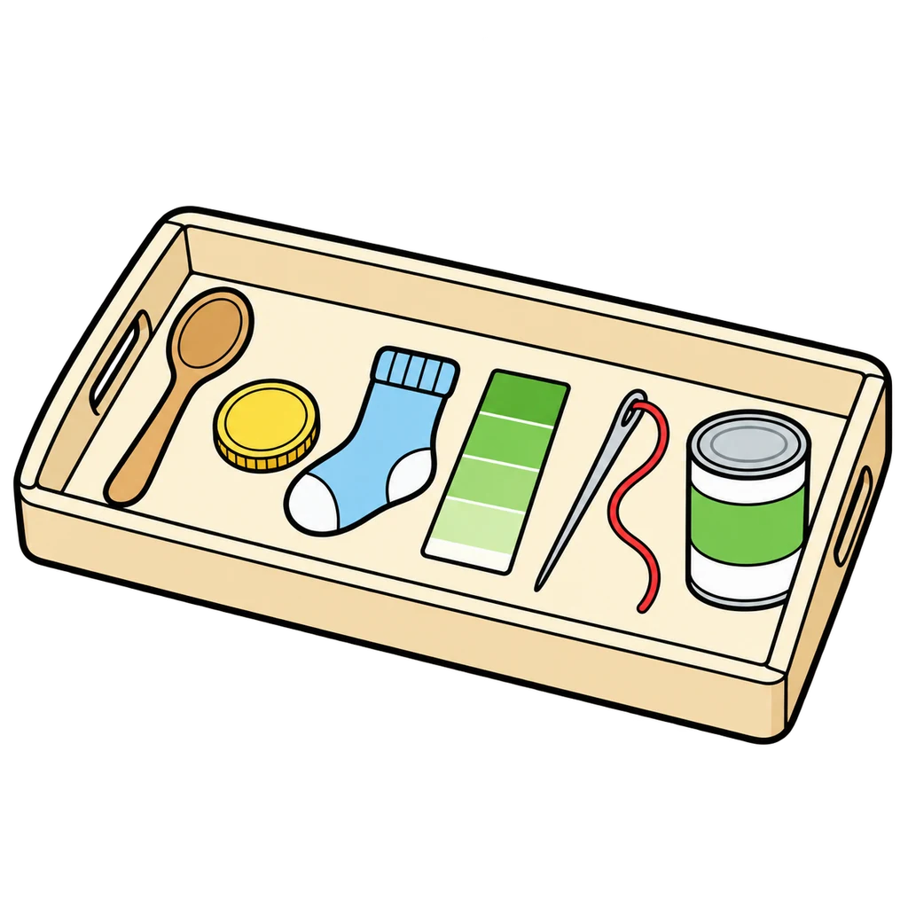
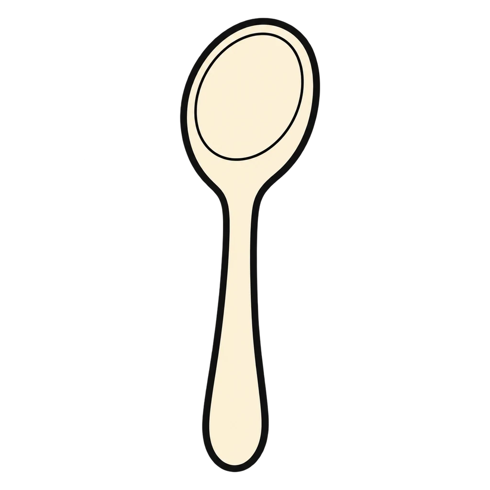
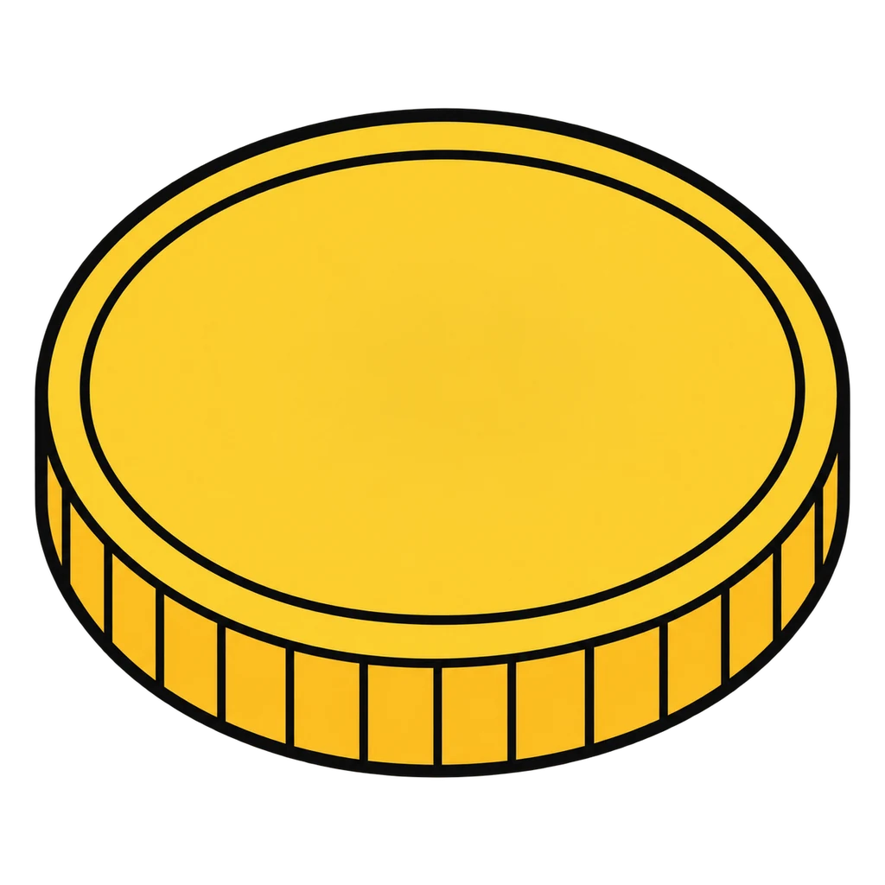
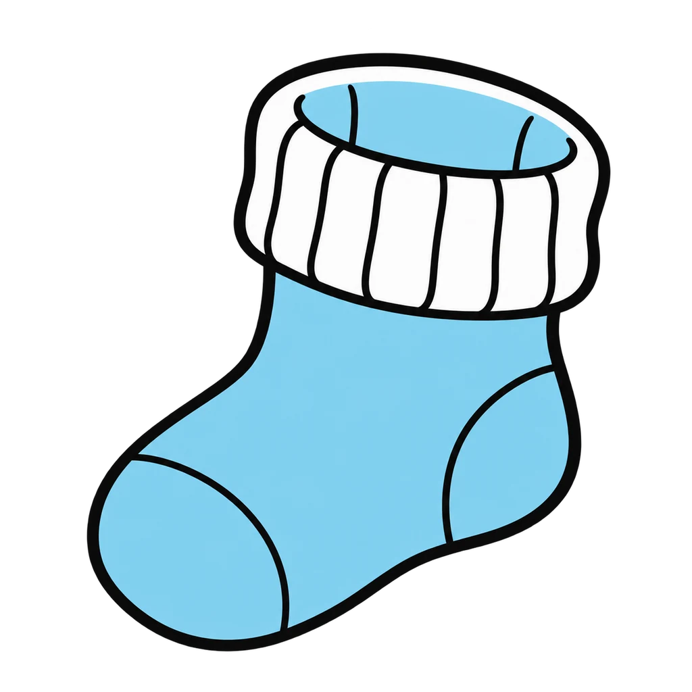
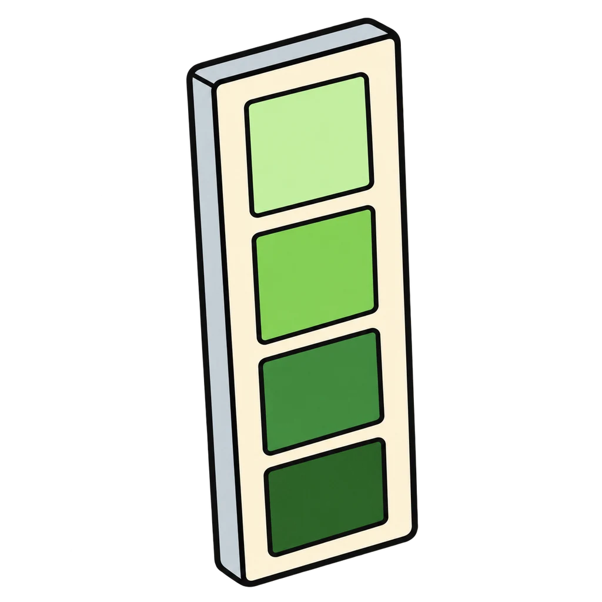
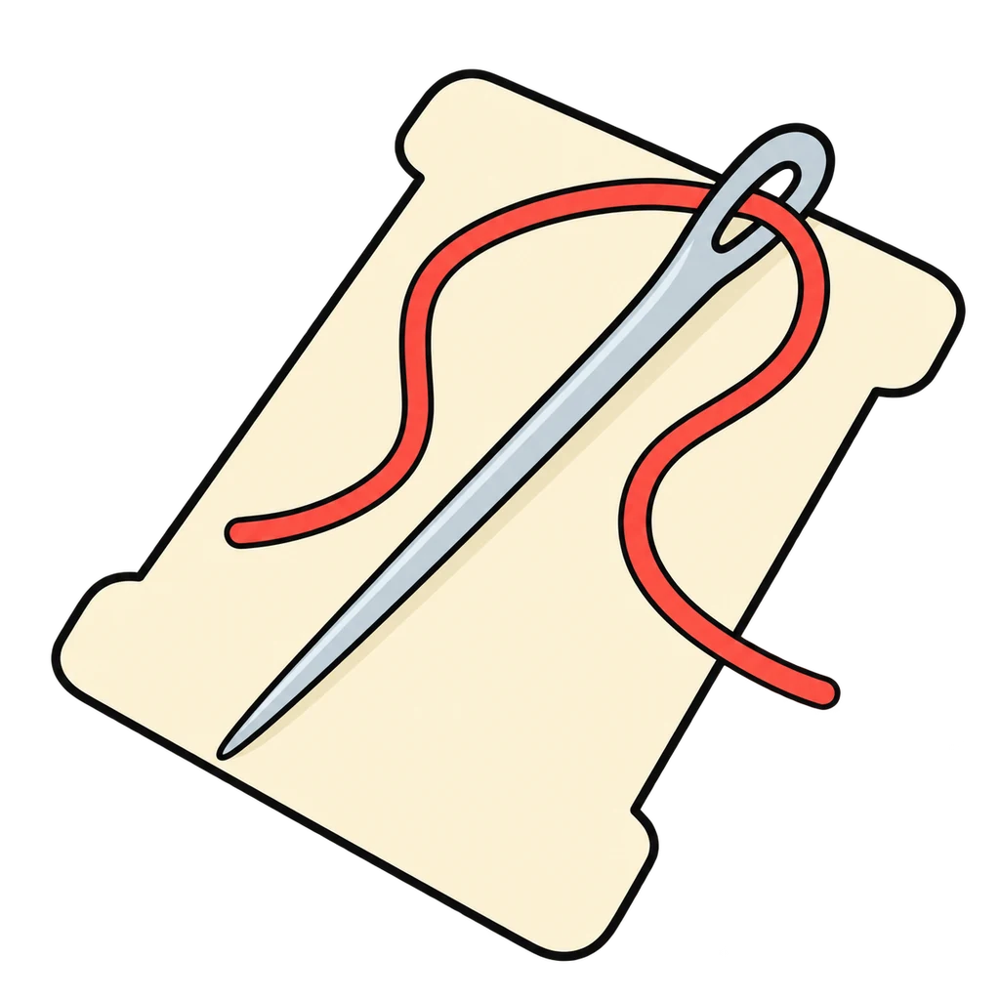
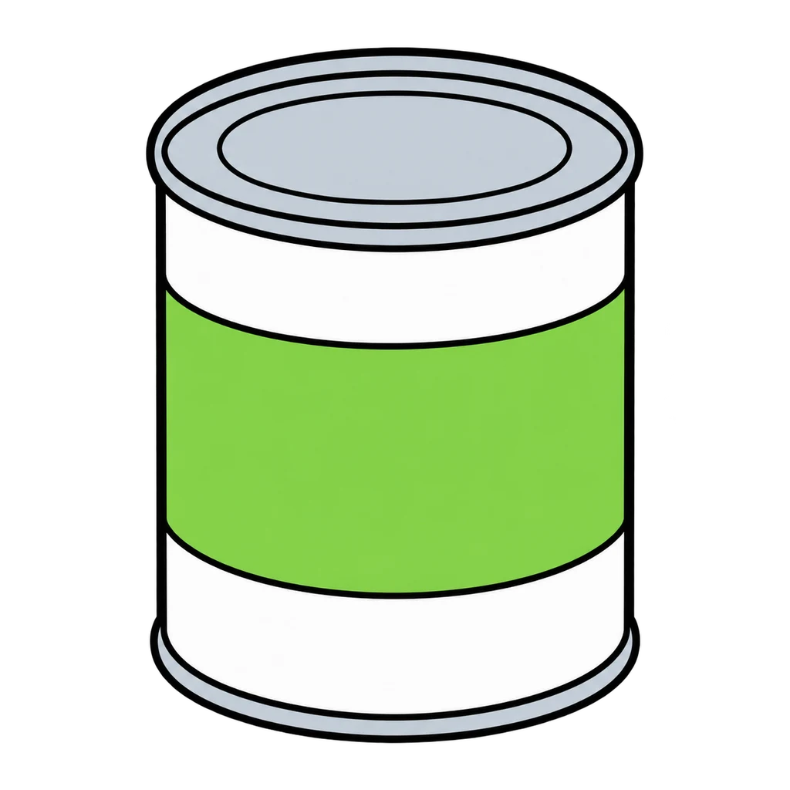

This game reviews Lesson 0.1, What Is FACS and Who Is in This Room. Round 1 is the tray of six objects from day 1, each matched to the unit it stands for. Round 2 sorts the things students do in each unit (the six activities from Step 1 and the home skills from the do now) into the same six bins. Use it as the do now on day 2 or day 3 of the year, and again on the first day of any new unit to reset the map. A miss shows the plain unit name with its NYS module name in parentheses, the same pairing as Handout 00.01. Nothing is saved when the page closes.

Six Objects
Six objects, six units. Tap the unit each one stands for. Then a fast round: which unit does each thing you do belong to?
How to play
Round 1: six objects, 8 seconds each. Round 2: twelve things you do, 6 seconds each. Every right tap is 10 points, and three in a row adds 5. A miss shows the right unit. Seconds left on a completed round bank as points.






The year map
The ones to study:
Worth knowing by heart:
- The six units in order: Kitchen Skills and Smart Eating; Me, My Goals, My Money; Growing Up, Getting Along; Spaces We Live In; Make It, Mend It, Wear It; From Farm to Table.
- The first cooking lab is on day 16 of the year.
- The three things you can count on: I will tell you the day before if anything hot or sharp is coming; the board tells you what to do before you sit, every day; when the lights blink and I count down, hands go empty and eyes come here.